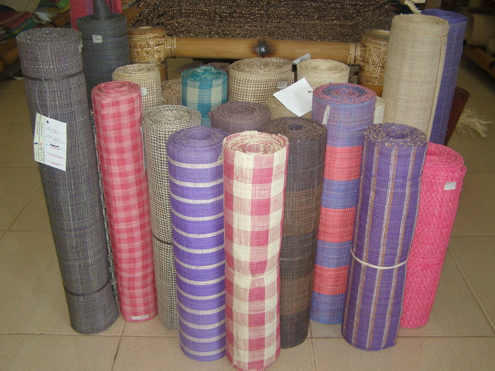

The island of Bohol is renowned for its rich culture and natural beauty, but one of its lesser-known treasures lies in its traditional weaving practices, most especially the unique art of Raffia Weaving. Using fibers from the raffia palm, a locally abundant resource, Boholano weavers create textiles that are sustainable, durable, and visually captivating. This craft reflects centuries-old traditions and is an important part of the region’s heritage, offering a fresh perspective on Filipino artistry and eco-friendly craftsmanship.
More about Raffia Weaving in Bohol
Raffia weaving holds a deep historical and cultural significance in Bohol, where it is rooted in traditions passed down through generations. Initially popularized among women in rural communities, weaving raffia became a way to support their households while preserving their artistic heritage. The raffia fiber, harvested from the buri palm, is sustainably gathered and woven into various items that represent both practicality and tradition. This craft was further bolstered in the mid-2000s when the Philippine Department of Trade and Industry (DTI) introduced modern loom equipment to the Tubigon Loomweavers Multi-Purpose Cooperative (TLMPC), empowering local weavers to create larger, high-quality textiles that could appeal to global markets.
The intricate designs seen in Bohol’s raffia textiles often draw inspiration from the island's natural landscapes. Artisans incorporate patterns that reflect the rich flora and fauna of Bohol, making each product a visual representation of the island’s environment. Natural dyes contribute to the earth-toned hues that give the textiles a distinct, organic look. The result is a blend of heritage and innovation—textiles that hold the history of traditional weaving techniques while resonating with contemporary style. This combination has helped raffia products gain recognition and respect, not only within the Philippines but also in international markets where consumers appreciate both the aesthetic and ethical value of these textiles.
Characteristics That Set Bohol’s Raffia Textiles Apart
- Natural, Sustainable Fiber - Raffia fiber is eco-friendly, as it is harvested from the palm leaves without harming the plant. This sustainable material is also highly durable, making it perfect for a variety of items, including bags, mats, baskets, and even furniture.
- Earth-Toned and Vibrant Colors - Works well on all devices, including mobiles and desktops.The dyes used in Bohol are often natural, derived from plants and minerals that produce earthy tones and deep, vibrant colors. Each piece has a warmth that reflects the island's natural landscape. The colors are chosen to symbolize elements of nature, from the soft greens of the countryside to the deep blues of the ocean.
- Distinctive Patterns - Boholano raffia textiles are known for their distinctive geometric patterns and motifs inspired by local flora and fauna. Each design is intricately woven by hand, with the weaver often creating a unique piece that showcases individual artistry. Traditional patterns are made by skillfully combining various weaves, textures, and colors into a harmonious design.
- Versatility in Crafting - From everyday clothing and accessories to sophisticated decor, Boholano raffia textiles are incredibly versatile. The durability of raffia makes it suitable for modern designs while preserving traditional aesthetics, enabling Boholano weavers to adapt to contemporary tastes without losing cultural significance
Today, Bohol’s raffia textiles are celebrated for their sustainability, as well as their intricate, nature-inspired designs that reflect the island’s lush landscape. The textiles are now a crucial part of the province’s cultural heritage and a source of pride, symbolizing the blend of tradition and innovation. From bags and mats to home decor, these products showcase Filipino craftsmanship while promoting environmental stewardship. This revival, supported by a growing demand for eco-friendly products, has given Bohol’s raffia weavers a platform to preserve their heritage while contributing to the local economy.
Bohol’s raffia textiles are more than just beautiful products, they are tangible pieces of cultural history. They reflect the resilience, creativity, and deep connection to nature that defines Boholano culture. Through Raffia Weaving, Boholano artisans preserve their heritage and contribute to the sustainable fashion movement, offering an alternative to mass-produced goods.